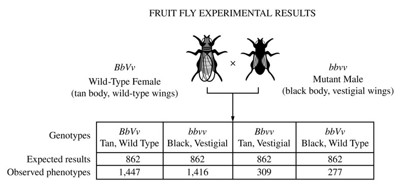

In Drosophila melanogaster the allele for wild-type tan body color (\(B\)) is dominant to the recessive allele
for black body color (\(b\)). Similarly, the allele for wild-type wing shape (\(V\)) is dominant to the recessive allele
for vestigial wing phenotype (\(v\)). In the cross diagrammed above, the expected and observed results are shown.
Which of the following best explains the observed results of the cross?
When the observed phenotypes differ significantly from the expected results, we can infer that
Mendel's laws (particularly independent assortment) did not hold. This is often the result of genetic linkage, where certain alleles are close to others. These allele pairs may be linked in the sense that because they are close together on a chromosome, they are inherited at a much higher frequency than if they were on different chromosomes.